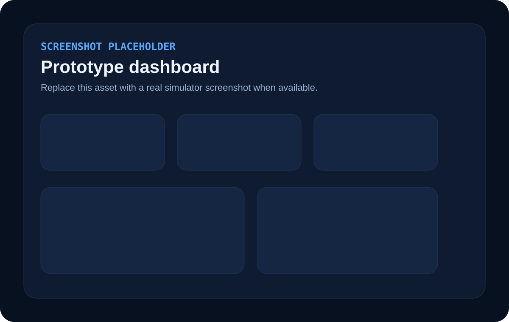
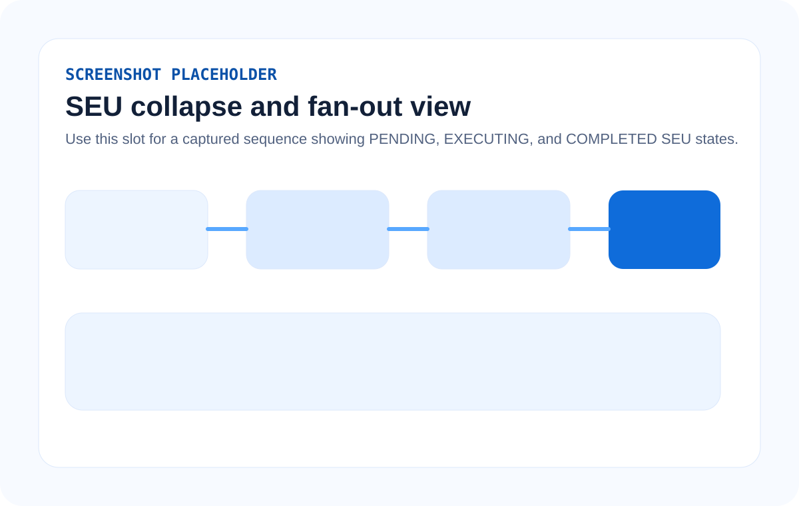

Public Technical Overview
Collapse equivalent enterprise agent work before it reaches compute, databases, and APIs.
WDC-Engine is a middleware and orchestration layer for semantic deduplication and shared execution of agent-generated enterprise tasks.
Instead of letting multiple AI agents independently trigger the same or near-same backend task, WDC-Engine fingerprints intent, detects semantic equivalence, holds unique work in a bounded temporal admission window, collapses sister tasks into a shared execution unit, executes once, and fans the full result out to every subscribed agent.
Technical flow
One backend execution serving many agent requests.
The Problem
Enterprise agent fleets routinely generate overlapping work, but conventional infrastructure treats each request as brand-new.
In multi-agent enterprise environments, concurrent agents often pursue related objectives over the same data and systems. Without middleware-level semantic deduplication, the same logical task can trigger repeated SQL execution, repeated API calls, repeated document parsing, and repeated report generation.
Equivalent work burns CPU and I/O repeatedly
Semantically identical or near-identical tasks are executed in full even when they would yield the same backend result.
Connection pools and warehouses absorb unnecessary load
Repeated queries increase connection pressure, query contention, and shared resource latency.
External endpoints are hit multiple times for the same logical question
Rate limits, enrichment costs, and upstream quota are consumed by overlapping requests.
Duplicate requests often cluster tightly after the same trigger event
Scheduled jobs, new documents, and workflow events can cause multiple agents to emit equivalent tasks within milliseconds to seconds.
The Core Idea
Fingerprint the work, admit a short cluster window, collapse equivalents, execute once, fan out results.
Ingress
Tasks enter through the Task Ingress Registry with task identity, origin metadata, type classification, timestamp, and payload.
Semantic fingerprinting
The Semantic Fingerprinting Module generates a canonical representation of logical intent, not just raw syntax.
Exact and near-match detection
The Similarity Detection Engine checks exact structural hashes first, then embedding-based near-equivalence for semantically similar work.
Temporal admission
Unique work is held briefly in a bounded temporal window so sister tasks can arrive before backend execution begins.
Shared execution unit
Equivalent tasks are collapsed into a single SEU. Duplicate arrivals receive a DEFERRED response and subscribe to the live unit.
Fan-out
One execution completes, the result is written once, and the full payload is fanned out to all subscribed agents.
Architecture
Eight cooperating modules implement prospective semantic deduplication before backend work starts.
TIR
Receives all task requests, assigns a unique request identifier, enriches origin metadata, timestamps arrivals, and classifies task type.
SFM
Builds a canonical semantic fingerprint that is intended to remain stable across stylistic and structural variations in the underlying task expression.
SDE
Performs a two-tier match sequence: exact structural hash lookup first, approximate nearest-neighbor search on embeddings second.
TAC
Implements Temporal Ghosting, a bounded delay window that allows clustered sister tasks to arrive and collapse before execution begins.
CM
Merges equivalent tasks into the existing shared execution unit, registers the subscriber, and returns a DEFERRED response for the duplicate request path.
WIP-Cache
Tracks active SEUs, status, subscribers, and final result payloads with durable replicated state for in-progress work.
SEU-M
Executes the shared execution unit once against the relevant backend resource and writes the full unmodified result into active state.
RFM
Fans the completed result out to every subscribed agent, preserving result correctness while deferring any agent-specific post-processing until after delivery.
Temporal Admission / Temporal Ghosting
A short, deliberate wait window turns clustered duplicate arrivals into one live execution unit.
The Temporal Admission Controller is not simple queue delay. It exploits the observed fan-out behavior of enterprise agent systems, where one trigger event often causes multiple semantically equivalent tasks to arrive almost at once.
Before execution begins
Unique work is held in a bounded pending state rather than dispatched immediately.
Duplicate arrivals subscribe live
Equivalent tasks do not create new backend work; they attach to the same in-progress SEU.
DEFERRED is intentional
Collapsed duplicates receive a deferred status rather than a distinct backend execution path.
How Matching Works
Two-tier matching combines fast exact detection with embedding-based near-duplicate recognition.
Exact structural hash lookup
The engine first checks whether the canonicalized task matches an in-flight or pending SEU exactly. This supports O(1)-style lookup behavior for exact normalized matches.
- Canonicalized SQL can produce a structural SHA-256 hash.
- Exact normalized matches collapse immediately.
- This path is optimized for high-confidence equivalence.
Approximate nearest-neighbor search on embeddings
If exact matching fails, the engine searches embedding space across in-flight and pending fingerprints, using a thresholded semantic similarity test to identify near-equivalent tasks.
- Natural-language requests map naturally to dense embeddings.
- Structurally different but semantically equivalent tasks can still collapse.
- Thresholds can be calibrated by task type and domain precision needs.
Exact-first discipline
For SQL-like workloads, WDC-Engine emphasizes canonicalization first, then exact hash matching when possible, before considering near-equivalence.
Configurable per task class
Admission windows and similarity thresholds can vary across SQL, natural language, API calls, document parsing, and spreadsheet generation workloads.
Multi-Modal Task Support
The architecture is designed for enterprise task types beyond one request format.
SQL query tasks
Canonicalization can normalize case, aliasing, predicate order, comments, and parameter abstraction before matching.
Natural-language tasks
Transformer-based sentence embeddings support near-equivalence across differently worded instructions with the same intent.
API calls
Normalization can include method, endpoint path abstraction, significant headers, and JSON key ordering.
Document parsing requests
Equivalent extraction or summarization work over the same enterprise documents can be collapsed before processing starts.
Spreadsheet generation
Repeated report-generation requests over the same underlying data can share a single backend retrieval and generation path.
Examples / Walkthroughs
Illustrative flows show how semantic collapse works across both structured and natural-language tasks.
Example A
SQL query deduplication
Three agents independently formulate current-quarter West-region sales retrieval tasks inside the same trigger window. Their SQL differs in casing, aliases, formatting, and schema naming, but the system reduces them to the same logical intent.
Agent A
SELECT customer_id, SUM(amount) AS total
FROM transactions
WHERE DATE(created_at) >= '2024-01-01'
AND region = 'West'
GROUP BY customer_id;Agent B
select CUSTOMER_ID, sum(AMOUNT) total
from TRANSACTIONS t
where t.region = 'West'
and date(t.created_at) >= '2024-01-01'
group by CUSTOMER_ID;Agent C
SELECT c_id, SUM(amt)
FROM txns
WHERE txns.region = 'West'
AND DATE(txns.created_at) >= '2024-01-01'
GROUP BY c_id;
Canonicalized intent
SELECT t1.customer_id, SUM(t1.amount) AS :COL_1
FROM :TABLE_1 AS t1
WHERE DATE(t1.created_at) >= :DATE_1
AND t1.region = :STR_1
GROUP BY t1.customer_id;Outcome: Agent B collapses by exact normalized hash match. Agent C is treated as a near-duplicate by semantic similarity. One SEU launches, one database call executes, and the result is fanned out to all three agents.
Example B
Natural-language task deduplication
Three agents ask for open enterprise support cases from the last week using different phrasings. Instead of requiring exact textual equality, the engine uses embedding similarity to detect equivalent intent.
"Get me all open support tickets assigned to the enterprise tier from last week with their resolution status."
"Retrieve enterprise support cases opened in the past 7 days that are still unresolved or in progress."
"List unresolved enterprise customer tickets from the last week including current status."
Outcome: No exact text match is required. Embedding similarity indicates near-equivalence, all three tasks collapse into one backend retrieval path, and each agent receives the same complete result payload for local post-processing.
Differentiation / Prior Art Comparison
WDC-Engine differs by operating prospectively on semantic equivalence at the middleware layer.
| Approach | What it usually matches | Where it operates | How WDC-Engine differs |
|---|---|---|---|
| Key-based caches | Exact key equality | Result reuse after key lookup | WDC-Engine targets semantic equivalence rather than exact predeclared cache keys. |
| Request coalescing / single-flight | Exact request key or URI | Concurrent duplicate suppression | WDC-Engine extends the idea by combining exact structural matching with embedding-based near-duplicate detection. |
| Task queues / workflow systems | Opaque jobs or queue items | Scheduling and execution orchestration | WDC-Engine interprets task intent and collapses equivalent work before queue execution begins. |
| Semantic cache | New request against completed prior results | Retrospective result reuse | WDC-Engine operates prospectively on live or pending work before backend execution occurs. |
| Multi-agent frameworks | Agent coordination logic | Agent layer | WDC-Engine is transparent middleware and does not require every agent to be rewritten to avoid duplicate tasks. |
| WDC-Engine | Exact plus near-equivalent semantic intent | Middleware between agents and execution resources | Combines semantic fingerprinting, temporal admission, shared live execution, and result fan-out in one execution-layer architecture. |
Distributed Deployment
Multi-node synchronization prevents duplicate shared execution units across zones.
In distributed deployments, a node that receives a new candidate fingerprint can attempt to acquire a distributed lock on that fingerprint. If the lock is already held elsewhere, the arriving task is treated as a collapse candidate and subscribed to the existing SEU rather than creating a second one.
Lock on fingerprint
A distributed lock ensures only one node establishes the pending shared execution unit for a candidate fingerprint.
Collapse across zones
Equivalent tasks arriving in separate availability zones can still converge into the same logical unit of work.
Shared correctness
Distributed coordination reduces duplicate SEU creation without changing the payload returned to the subscribing agents.
Metrics / Deduplication Multiplier
One execution can satisfy many agent requests, and the savings are observable.
Deduplication multiplier for one SQL SEU serving three agent requests with a single backend execution.
Two redundant backend executions eliminated for that one cluster.
Shared external calls reduce rate-limit burn and upstream duplication pressure.
Fewer repeated scans and fewer concurrent equivalent queries reach the backend.
The patent describes exposing aggregate statistics such as mean and peak deduplication multiplier, executions saved, estimated compute cost savings, and API rate-limit units saved through a monitoring interface.
Prototype
A local MVP in the same repository demonstrates the core WDC-Engine execution flow.
The public microsite remains the primary technical narrative, while the `/prototype` directory contains a narrow FastAPI-based concept demo. It shows how multiple simulated agents submit tasks, how semantically equivalent work collapses into one Shared Execution Unit, and how one execution fans results out to every subscriber.
Semantic fingerprinting
SQL canonicalization stubs, API canonicalization, and sentence-transformer embeddings for natural-language tasks.
Temporal admission window
A non-resetting timer holds the first unique task long enough for sister tasks to arrive and collapse.
Shared execution unit
Duplicate and near-duplicate requests attach to one SEU instead of triggering parallel backend work.
Result fan-out
The same result payload is distributed to all subscribed task records after one backend execution completes.
Dedup multiplier
Metrics track tasks received, SEUs executed, executions saved, and the deduplication multiplier.



Why It Matters
Transparent middleware-level optimization for enterprise multi-agent systems.
Lower compute waste
Equivalent tasks stop consuming repeated backend cycles.
Lower cloud cost
Repeated database reads, compute time, and external API usage are reduced.
Lower infrastructure pressure
Databases, APIs, and document services handle fewer redundant requests.
Faster agent systems
Agents avoid queuing behind duplicate peer work competing for the same resources.
Transparent integration
The architecture is designed to work beneath existing agent frameworks rather than requiring every agent to self-coordinate perfectly.
Result correctness preservation
Each agent still receives the full result payload it would have received from independent execution.